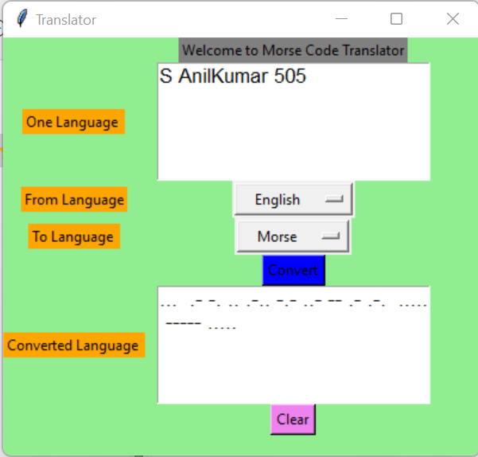

to check the first dfgdg child pseudo-class fsdfs
If an ele is taller fsdfs than the ele contains it , and it is floated , it will overflow outside of it's container , you can use clearfix hack
toc check the adjacent selectors
To check the firstchild pseudo-class
matches all the ele thet are
descedent of a specified technology
child seelctors selects all the ele the are fsdfs children of a specified ele the descdent seelectos applied to this but not child fsdfs selector cause its not a directly but descedent
Adjacent selectors selects
an(one) ele that is directly fsdfs after another specified ele
The Sibling selctor selects all the elements fsdfs that fsdfs are next siblings of a specified ele
pseudo asxdas and html class both can be comnbined
hover
this is going to be an example of putting the text inside of an picture wih trasparent box